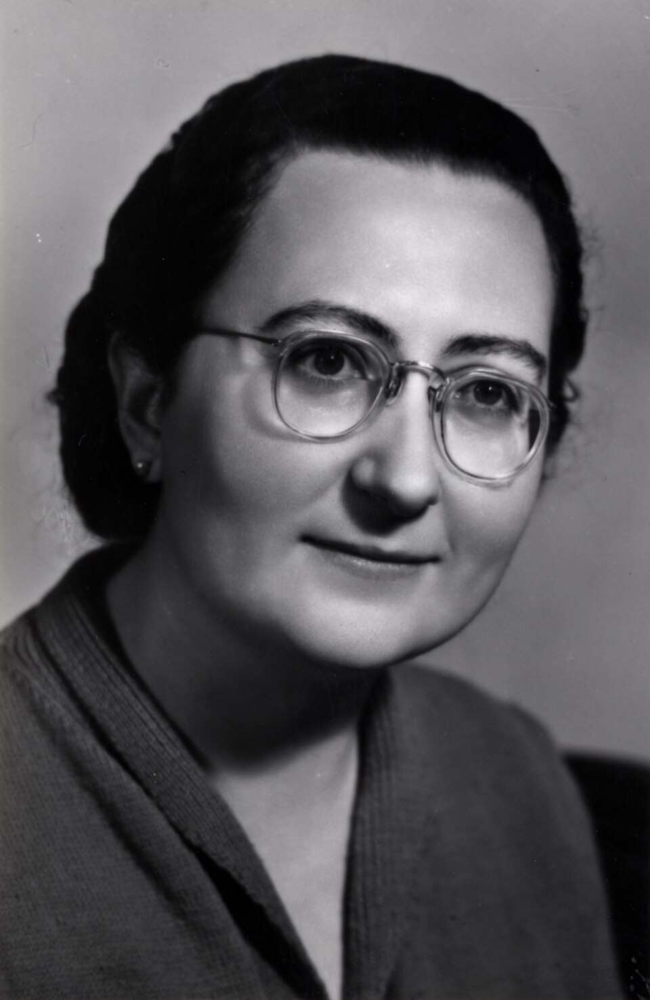

Ascolta la storia
Maria Nicotra Fiorini (1913-2007) fu una delle 21 Madri Costituenti italiane, protagonista della vita politica e sociale del dopoguerra. Originaria di Catania, si distinse fin da giovane per il suo impegno nell'Azione Cattolica e come infermiera volontaria durante la Seconda guerra mondiale, ricevendo la medaglia d'oro al valore. Eletta all'Assemblea Costituente nel 1946 e successivamente deputata, si occupò soprattutto di temi sociali, come la tutela delle lavoratrici madri, la sanità e l'istruzione. Tornata in Sicilia, continuò il suo impegno nel movimento femminile e nelle istituzioni locali. Figura determinata e indipendente, fu anche la prima donna presidente di una squadra di calcio professionistica. Nel 2006 ricevette la massima onorificenza della Repubblica per il suo contributo alla storia democratica italiana.